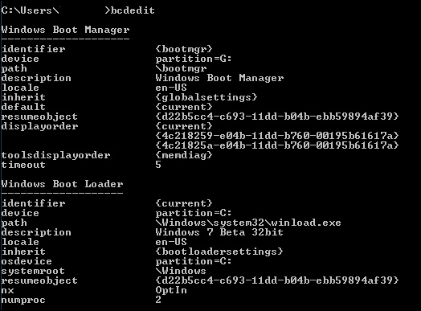

Меню загрузки Windows 7 и bcdedit
С помощью замечательной программы bcdedit можно без каких-либо проблем изменить записи в меню загрузки Windows 7, либо восстановить их, если с ними что-то стряслось. Программа работает в командной строке и позволяет делать с меню загрузки всякие полезные штуки.
В первую очередь нам необходимо ее запустить. Для этого щелкните на кнопке Пуск, введите cmd и нажмите клавишу <Enter>. Так мы открыли командную строку.
В открывшемся окне командной строки введите bcdedit и нажмите клавишу <Enter>.

Важный момент: работа с bcdedit возможна только в режиме администратора. Кроме того, использовать bcdedit можно в консоли восстановления либо в командной строке программы ERD Commander.
Многие значения BCD указаны в фигурных скобках, вот в таких {параметр}. В этих скобках заключены идентификаторы CLSID. Все идентификаторы обозначаются длинным кодом из букв и цифр в формате {xxxxxxxx-xxxx-xxxx-xxxx-xxxxxxxxxxxx}, но есть и стандартные идентификаторы с понятными названиями, такие как {ntldr} либо {bootmgr}.
Теперь перечислим основные параметры bcdedit, которые нам понадобятся.
Если в команде, выполняемой с помощью bcdedit, не указан параметр /set с соответствующим идентификатором (ID), то изменения, произведенные посредством такой команды, будут внесены в Диспетчер загрузки Windows (он же Windows Boot Manager), а не в Загрузка Windows (Windows Boot Loader).
Не спешите ковыряться в загрузчике Windows, поскольку предварительно нужно создать его запасную копию. Для этого создайте на любом диске папку BootCopy и введите в командной строке следующую команду (разумеется, bcdedit должна быть уже запущена):
bcdedit /export D:\BootCopy\bcd
Вместо D:\ можете указать любой другой диск.
Если вы так раскурочили загрузчик, что совершенно запутались, все первоначальные настройки можно будет вернуть из созданной нами ранее копии:
bcdedit /import D:\BootCopy\bcd
Теперь займемся изменением меню загрузки Windows 7. Представим, что у нас есть три записи с идентификаторами, а именно {ID1}, {ID2} и {ID3}.
Как изменить операционную систему, загружаемую по умолчанию
Укажите значение /default и идентификатор ОС, что будет загружаться по умолчанию. Скажем, для ОС с идентификатором {ID3} команда будет выглядеть следующим образом:
bcdedit /default {ID3}
Теперь ОС с {ID3} будет в самом вверху меню загрузки.
Как изменить размещение записей в меню загрузки
Посмотрим, как можно перемещать записи.
Делаем запись первой в списке:
bcdedit /displayorder {ID} /addfirst
Делаем запись последней в списке:
bcdedit /displayorder {ID} /addlast
Указываем точный порядок записей:
bcdedit /displayorder {ID3} {ID1} {ID2}
Как изменить значение задержки загрузки
Чтобы изменить значение задержки, по истечению которого начнется загрузка операционной системы, выполните такую команду:
bcdedit /timeout SS
в данном случае SS – число в секундах, скажем, красивое число 66.
Как изменить язык менеджера загрузки
Используйте следующую команду:
bcdedit /set {bootmgr} locale ru_RU
Так мы выбираем русский язык, указывая нужное значение, вместо ru_RU для русского можно указать en_US для английского языка и так далее.
Как изменить язык дополнительного меню загрузки
Дополнительное меню загрузки вызывается нажатием клавиши <F8>. Бывает так, что это меню становится английским, хотя мы ранее и выбрали русский. Это легко исправить:
bcdboot %Windir% /l ru_RU
Аналогичным образом вместо ru_RU можно указать en_US или обозначение любого другого языка.
Как изменить название операционной системы в меню загрузки
Самая вкусная возможность – ввести свое название для операционной системы, отображаемое в меню загрузки.
Кроме того, так можно изменить название ОС, работа которой была восстановлена через среды восстановления. У таких ОС в меню загрузки появляется надпись “восстановлено”. Любое название можно ввести такой командой:
bcdedit /set {ID} description "Выбранное название"
К примеру:
bcdedit /set {ntldr} description "Мастдай ВыньХэПэ Профессиональный SP3"
bcdedit /set {current} description "Microsoft Windows 7 Corporate x32"
Как изменить букву раздела, где находится папка ОС и загрузочные файлы
bcdedit /set {ID} device partition=буква_диска:
bcdedit /set {ID} osdevice partition=буква_диска:
Вместо буквы диска подставьте понятно что, скажем, C: или D:.
Как добавить новую операционную систему в меню загрузки
1. Для начала копируем ту запись, что уже есть, присвоив ей новое название:
bcdedit /copy {current} /d "Microsoft Windows Vista"
Появится сообщение “Запись успешно скопирована в {хххххххх-хххх-хххх-хххх-хххххххххххх}”.
2. Указываем для параметров device и osdevice новые значения (для новой ОС, добавляемой в меню загрузки):
bcdedit /set {хххххххх-хххх-хххх-хххх-хххххххххххх} device partition=D:
bcdedit /set {хххххххх-хххх-хххх-хххх-хххххххххххх} osdevice partition=D:
Вместо D: можно указать другую букву диска. Вместо кучи крестиков введите идентификатор {ID}, полученный на этапе 1.
3. Добавим новую запись в меню загрузки:
bcdedit /displayorder {хххххххх-хххх-хххх-хххх-хххххххххххх} /addfirst
Запись появится в начале списка (или используйте /addfirst, чтобы она появилась в конце списка).
Как удалить запись об операционной системе из менеджера загрузки и BCD
Чтобы избавиться от записи в менеджере (и меню) загрузки воспользуйтесь следующей командой:
bcdedit /delete {ID}
Если в качестве {ID} указывается готовая запись, скажем, {ntldr}, то нам понадобится дополнительно использовать ключ /f. Если же в качестве {ID} применяется запись типа {хххххххх-хххх-хххх-хххх-хххххххххххх}.
Иногда могут потеряться некоторые файлы, жизненно важные для работы загрузчика, такие как bootsect.exe, bcdboot.exe и bcdedit.exe для Windows 7 Ultimate x86/x64. Скачать эти файлы можно по ссылке ниже:
Вот, собственно, и все, теперь вы обрели мудрость загрузочного меню Windows 7/Vista и получаете почетный значок “Просветленный мастер”.